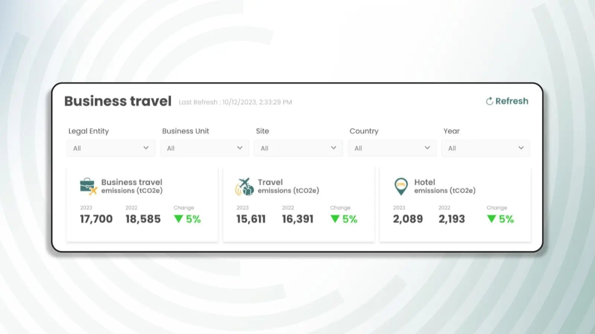

Sustainability is often associated with overwhelming data. However, few have considered the potential of ESG software for organizations aiming to reduce their environmental impact. Unfortunately, many sustainability dashboards are overloaded with excessive information, complex structures, and poor user experiences.
As a senior UI & UX designer , my goal was to transform these dashboards to drive visual clarity, meaningful yet clear data representation and better user navigation in our flagship ESG platform. Here's how I addressed these challenges:
1. Prioritizing the user and their goals over excessive data
An effective dashboard should clearly define the problem statement, the user, their goals and why they matter.
Who - Typical user groups featuring sustainability managers, executives, employees, & consumers
What - data in simplest form
Why - enable better understanding and facilitate informed decision-making, track progress and make significant progress.
Pro Tip: Implement role-based dashboards, use filters for data, and focus on key metrics instead of overwhelming users with too much information.

2. Designing for simplicity & intuitive navigation
A common pattern often noticed in sustainability dashboards and ESG tools is information overload, which users cannot process at first glance. As a result, the user is left with cognitive overload and poor usability.
Best Practices:
- Minimal UI - Place only whatever is necessary
- Negative space - White space improves readability and clarity
- Card-based layout -Structured information
- Straightforward Navigation - Familiar call to action and buttons
Pro Tip: Offer multiple focused dashboards instead of a single cluttered one.
3. Data visualization that drives action
Stories are always impactful; visual storytelling for data will always be impactful.
Best Practices:
- Line and column charts to show trends over time
- Bar chart for comparison between 2 categories
- Donut and pie charts for percentage representation
- Tree chart to represent hierarchy
- Funnel chart to show stages in a process
Pro Tip: Showing the impact of data is far more effective than the data itself. For instance, if we place numbers by themselves, they risk getting lost in the chaos, but visual representation of these data points conveys the message loud and clear.
Don't just show numbers; compare it with past performance and benchmarks.
A well-designed carbon footprint calculator dashboard helps users track emissions in real time and compare progress against sustainability goals.
4. Ensuring accessibility & mobile optimization
Best Practices:
- Mobile-first design
- WCAG-compliant color contrast
- Meta tags for better accessibility
- Keyboard-friendly navigations for accessibility
Pro Tip: Dashboard design must focus on essential information and ensure smooth navigation for users with accessibility and smaller screens.
5. Making data meaningful with actionable insights
Best Practices:
- Set Yearly Targets: Allow users to define clear sustainability goals by year for measurable progress.
- AI Recommendations: Use AI to suggest impactful ways to improve sustainability efforts.
- Smart Alerts: Notify users when metrics exceed limits, helping them stay proactive.
- Impact Dashboard: Visualize emissions data to guide informed, eco-friendly decisions.
Pro Tip: Combine goal setting with AI insights to build adaptive, results-driven sustainability plans.
Example: If an organization's energy consumption is rising, the ESG tool should suggest specific actions like reducing energy consumption by opting for solar-powered equipment.
Final Thoughts
A sustainability dashboard should be intuitive, with clean and clear insights; there should not be information overload. In short, by prioritizing user-centric, visually clean, easy-to-scan, interactive, action-oriented, and accessible dashboards for each user, we can create dashboards that drive the real impact.